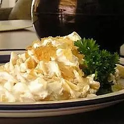

Turos Csusza (Pasta with Cottage Cheese)

Wow! It's pasta with cottage cheese
This recipe is great for nights when you get home and need something to wind down.
'Turos Csusza' is a Hungarian dish I learned from my Dad last year when I turned twelve.
It consists of bacon, egg noodles, sour cream, and cottage cheese. 'Elvezet!'
Ingredients
- 1 (16 ounce) package egg noodles
- 3½ slices smoked bacon
- 2 cups sour cream
- 1 (12 ounce) container cottage cheese
- salt to taste
Cooking Steps
- Preheat oven to 350 degrees F (175 degrees C).
- Bring a large pot of lightly-salted water to a boil. Add pasta and cook until al dente, 8 to 10 minutes; drain well.
- Cook the bacon in a skillet over medium-high heat until crisp; drain, crumble, and set aside.
- Place the drained noodles in a large baking dish. Stir the sour cream into the noodles.
Spoon the cottage cheese evenly over the top of the noodle mixture. Sprinkle the crumbled bacon over the top; season with salt.
- Bake in preheated oven until the cottage cheese softens, 3 to 5 minutes.
BACK TO TOP
BACK TO INDEX